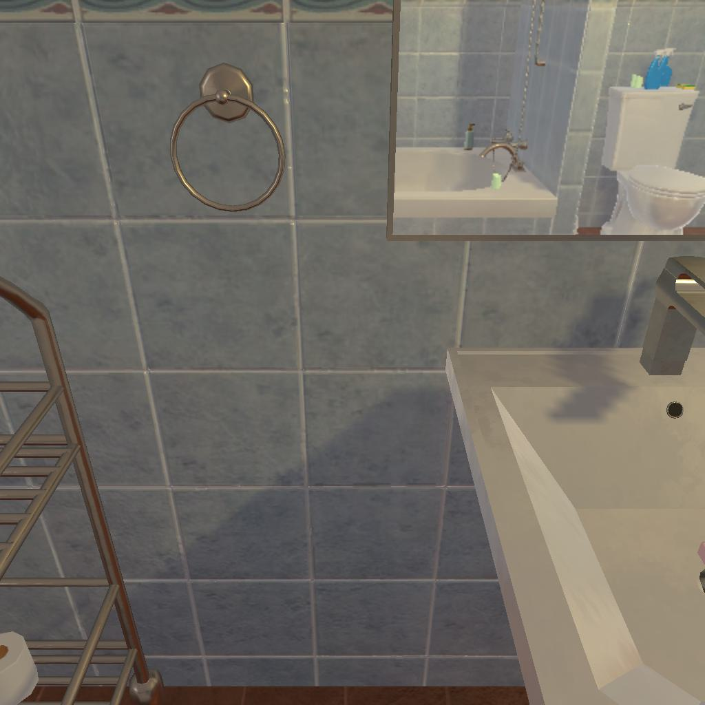

---------------------------------------------------------task: 25---------------------------------------------------------
--------------------------------------------------------------------------------------------------------------------------------------------------------------------
--------------------------------------------------------------------------------------------------------------------------------------------------------------------
Step:--------------------------------------------------------------------------2-------------------------------------------------------------------------------
----------------------------------------
VLM Prompt:
Image1:
Image2:
Image3:
**Instruction**
1. Analyze the provided images to identify all visible household objects and compare the difference between images (e.h. whether the object is opened or not and taken on hand or not), focusing on those relevant to the task description "find two dishsponge and put them in cart."
2. Use the analysis of images and the task hint "The agent must find an object of the desired type, pick it up, find the correct location to place it, put it down there, then look for another object of the desired type, pick it up, return to previous location, and put it down there with the other object." to answer the question: what is the most reasonable action in the choices for the task description "find two dishsponge and put them in cart"?
3. Decide and write the answer using the template: The answer is: (i): , where i is the real number. If there is no desired object in images, search every place based on **Initial Observation** to find the object. And if no one is exactly correct, choose a similar answer.
**Initial Observation**
You are in the middle of a room. Looking quickly around you, you can see bathtub (1), bathtubbasin (1), cart (1), toilet (1), garbagecan (1), toiletpaperhanger (1), shelf (1-4), sink (1), sinkbasin (1), handtowelholder (1)
**Answer Choices**
(1): go to bathtub 1
(2): go to bathtubbasin 1
(3): go to cart 1
(4): go to toilet 1
(5): go to garbagecan 1
(6): go to toiletpaperhanger 1
(7): go to shelf 2
(8): go to shelf 3
(9): go to shelf 4
(10): go to sink 1
(11): go to sinkbasin 1
(12): go to handtowelholder 1
(13): take papertowelroll 1 from shelf 1
(14): take toiletpaper 1 from shelf 1
(15): take soapbar 1 from shelf 1
**Answer**
Let's think step by step by following the instructions.
----------------------------------------
----------------------------------------
Original Response:
First, we analyze the provided images. In Image 1, we can see a handtowelholder, a mirror reflecting a bathtub, a sink, and a toilet. There is also a shelf on the right side of the mirror but it's not fully visible. In Image 2 and Image 3, we see the same shelf with three levels containing a toiletpaper roll on the top shelf and a soapbar on the second shelf.
Comparing the differences between the images, there is no visible change, and no objects appear to be opened or taken in hand. There is also no dishsponge visible in any of the images.
Based on the task description "find two dishsponge and put them in cart" and the task hint provided, the most reasonable action would be to first locate the dishsponges. Since they are not visible in the images, we need to search every place based on the Initial Observation.
From the Initial Observation, the most likely places to find a dishsponge would be around the sink or on the shelves. Since we can already see part of the sink and one shelf in the images and there is no dishsponge there, the next reasonable action would be to check the other shelves.
The answer is: (7): go to shelf 2. If the dishsponge is not there, then we would continue to (8): go to shelf 3 and (9): go to shelf 4, respectively, until we find the dishsponges.
----------------------------------------
----------------------------------------
>>> Refine Original VLM Response and Get Pure Action: go to shelf 2
----------------------------------------
-----------------------------------------------------------------
Running time: 16.000441551208496 seconds
Total Money: 15.414930000000002
-----------------------------------------------------------------
-----------------------------------------------------------------
Text Observation:You arrive at loc 7. On the shelf 2, you see a papertowelroll 1, a toiletpaper 1, and a soapbar 1.
-----------------------------------------------------------------
UNSUCCEED